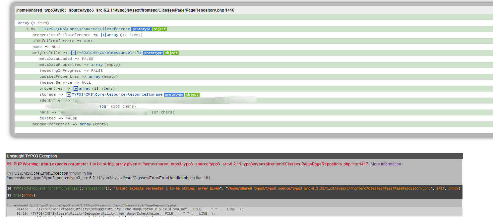

Bug #60998
PageRepository::shouldFieldBeOverlaid raises PHP warning
| Status: | Resolved | Start date: | 2014-08-15 | |
|---|---|---|---|---|
| Priority: | Must have | Due date: | ||
| Assigned To: | - | % Done: | 100% |
|
| Category: | Frontend | Spent time: | - | |
| Target version: | next-patchlevel | |||
| TYPO3 Version: | 6.2 | Is Regression: | Yes | |
| PHP Version: | 5.3 | Sprint Focus: | ||
| Complexity: |
Description
With TYPO3 6.2.4, the sys_log shows a lot of PHP warnings:
Core: Error handler (FE): PHP Warning: trim() expects parameter 1 to be string, array given in [...]/typo3/sysext/frontend/Classes/Page/PageRepository.php line 1416
When looking at the shouldFieldBeOverlaid method, the PHPDoc comment states the type of $value being "mixed":
1396: * @param mixed $value Current value of the field
$value is assigned to $checkValue later:
1409: $checkValue = $value;
Then the critical trim() is executed without verifying the type of $checkValue:
1416: if (trim($checkValue) === '') {
1417: $shouldFieldBeOverlaid = FALSE;
1418: }
At some point there should be a type check against $checkValue instead of assuming it to be a string.
Screen Shot 2014-10-24 at 09.08.10.png (161.4 kB)
{kind=link}
pages_language_overlay_meida.png (129.4 kB)
{kind=link}
Uncaught TYPO3 Exception.txt
 (11.9 kB)
(11.9 kB)
Related issues
Associated revisions
[BUGFIX] Fix PHP warning in shouldFieldBeOverlaid()
PageRepository::shouldFieldBeOverlaid now properly checks for array-typed
values when mergeIfNotBlank behaviour is requested.
Resolves: #60998
Releases: master, 6.2
Change-Id: I9b536d2261eea6325e0f74365a3a4c85e37b1241
Reviewed-on: http://review.typo3.org/34320
Reviewed-by: Mathias Schreiber <mathias.schreiber@wmdb.de>
Tested-by: Mathias Schreiber <mathias.schreiber@wmdb.de>
Reviewed-by: Andreas Fernandez <a.fernandez@scripting-base.de>
Reviewed-by: Stefan Neufeind <typo3.neufeind@speedpartner.de>
Reviewed-by: Xavier Perseguers <xavier@typo3.org>
Tested-by: Xavier Perseguers <xavier@typo3.org>
[BUGFIX] Fix PHP warning in shouldFieldBeOverlaid()
PageRepository::shouldFieldBeOverlaid now properly checks for array-typed
values when mergeIfNotBlank behaviour is requested.
Resolves: #60998
Releases: master, 6.2
Change-Id: I9b536d2261eea6325e0f74365a3a4c85e37b1241
Reviewed-on: http://review.typo3.org/34523
Reviewed-by: Xavier Perseguers <xavier@typo3.org>
Tested-by: Xavier Perseguers <xavier@typo3.org>
[FOLLOWUP][BUGFIX] Fix PHP warning in shouldFieldBeOverlaid()
We have to check the type of the variable properly.
In case we have a non-empty array, we must not run trim() on it.
Releases: master, 6.2
Resolves: #60998
Change-Id: I3bef04a3e64d4c811c71a110fa0bfba4fc3fc361
Reviewed-on: http://review.typo3.org/37928
Reviewed-by: Florian Engelke <engelke@louis.info>
Tested-by: Florian Engelke <engelke@louis.info>
Reviewed-by: Wolfgang Baumgartner <wolfgang.baumgartner@hswt.de>
Tested-by: Wolfgang Baumgartner <wolfgang.baumgartner@hswt.de>
Reviewed-by: Wouter Wolters <typo3@wouterwolters.nl>
Tested-by: Wouter Wolters <typo3@wouterwolters.nl>
[FOLLOWUP][BUGFIX] Fix PHP warning in shouldFieldBeOverlaid()
We have to check the type of the variable properly.
In case we have a non-empty array, we must not run trim() on it.
Releases: master, 6.2
Resolves: #60998
Change-Id: I3bef04a3e64d4c811c71a110fa0bfba4fc3fc361
Reviewed-on: http://review.typo3.org/37940
Reviewed-by: Wouter Wolters <typo3@wouterwolters.nl>
Tested-by: Wouter Wolters <typo3@wouterwolters.nl>
History
#1 Updated by Markus Klein 12 months ago
- Status changed from New to Needs Feedback
Hi Stefan, thanks for the report!
Can you provide a stacktrace for this? (Enable the Developer preset in the Install Tool to get a full exception incl. stack trace)
It seems really weird that a field value of a table is an array!?
It looks like the bug is actually somewhere else.
#2 Updated by Jens Schmietendorf 10 months ago
Uncaught TYPO3 Exception
#1: PHP Warning: trim() expects parameter 1 to be string, array given in /Users/XXXXX/Documents/htdocs/typo3_src-6.2.5/typo3/sysext/frontend/Classes/Page/PageRepository.php line 1416 (More information)
TYPO3\CMS\Core\Error\Exception thrown in file
/Users/XXXXX/Documents/htdocs/typo3_src-6.2.5/typo3/sysext/core/Classes/Error/ErrorHandler.php in line 101.
30 TYPO3\CMS\Core\Error\ErrorHandler::handleError(2, "trim() expects parameter 1 to be string, array given", "/Users/XXXXX/Documents/htdocs/typo3_src-6.2.5/typ…o3/sysext/frontend/Classes/Page/PageRepository.php", 1416, array)
29 trim(array)
/Users/XXXXX/Documents/htdocs/typo3_src-6.2.5/typo3/sysext/frontend/Classes/Page/PageRepository.php:
01414: }
01415:
01416: if (trim($checkValue) === '') {
01417: $shouldFieldBeOverlaid = FALSE;
01418: }
28 TYPO3\CMS\Frontend\Page\PageRepository::shouldFieldBeOverlaid("tt_content", "image", array)
/Users/XXXXX/Documents/htdocs/typo3_src-6.2.5/typo3/sysext/frontend/Classes/Page/PageRepository.php:
01381: $localizedReferences = $fileRepository->findByRelation($tableName, $fieldName, $localizedId);
01382: $localizedReferencesValue = $localizedReferences ?: '';
01383: if ($this->shouldFieldBeOverlaid($tableName, $fieldName, $localizedReferencesValue)) {
01384: $references = $localizedReferences;
01385: }
27 TYPO3\CMS\Frontend\Page\PageRepository::getFileReferences("tt_content", "image", array)
/Users/XXXXX/Documents/htdocs/typo3_src-6.2.5/typo3/sysext/frontend/Classes/ContentObject/FilesContentObject.php:
00315: $referencesFieldName,
00316: $element
00317: );
00318:
00319: $this->addToArray($references, $fileObjects);
26 TYPO3\CMS\Frontend\ContentObject\FilesContentObject::handleFileReferences(array, array, array)
/Users/XXXXX/Documents/htdocs/typo3_src-6.2.5/typo3/sysext/frontend/Classes/ContentObject/FilesContentObject.php:
00078: }
00079:
00080: $this->handleFileReferences($conf, (array)$this->cObj->data, $fileObjects);
00081: }
00082: if ($conf['files'] || $conf['files.']) {
25 TYPO3\CMS\Frontend\ContentObject\FilesContentObject::render(array)
/Users/XXXXX/Documents/htdocs/typo3_src-6.2.5/typo3/sysext/frontend/Classes/ContentObject/ContentObjectRenderer.php:
00751: $contentObject = $this->getContentObject($name);
00752: if ($contentObject) {
00753: $content .= $contentObject->render($conf);
00754: } else {
00755: // Call hook functions for extra processing
24 TYPO3\CMS\Frontend\ContentObject\ContentObjectRenderer::cObjGetSingle("FILES", array, "/stdWrap/.cObject")
/Users/XXXXX/Documents/htdocs/typo3_src-6.2.5/typo3/sysext/frontend/Classes/ContentObject/ContentObjectRenderer.php:
02280: */
02281: public function stdWrap_cObject($content = '', $conf = array()) {
02282: return $this->cObjGetSingle($conf['cObject'], $conf['cObject.'], '/stdWrap/.cObject');
02283: }
02284:
23 TYPO3\CMS\Frontend\ContentObject\ContentObjectRenderer::stdWrap_cObject("", array)
/Users/XXXXX/Documents/htdocs/typo3_src-6.2.5/typo3/sysext/frontend/Classes/ContentObject/ContentObjectRenderer.php:
02101: // Call the function with the prefix stdWrap_ to make sure nobody can execute functions just by adding their name to the TS Array
02102: $functionName = 'stdWrap_' . $functionName;
02103: $content = $this->{$functionName}($content, $singleConf);
02104: } elseif ($functionType == 'boolean' && !$conf[$functionName]) {
02105: $isExecuted[$functionName] = TRUE;
22 TYPO3\CMS\Frontend\ContentObject\ContentObjectRenderer::stdWrap("", array)
/Users/XXXXX/Documents/htdocs/typo3_src-6.2.5/typo3/sysext/frontend/Classes/ContentObject/LoadRegisterContentObject.php:
00040: $theValue = $this->cObj->stdWrap($conf[$register], $conf[$registerProperties]);
00041: } elseif (isset($conf[$registerProperties])) {
00042: $theValue = $this->cObj->stdWrap('', $conf[$registerProperties]);
00043: }
00044: $GLOBALS['TSFE']->register[$register] = $theValue;
21 TYPO3\CMS\Frontend\ContentObject\LoadRegisterContentObject::render(array)
/Users/XXXXX/Documents/htdocs/typo3_src-6.2.5/typo3/sysext/frontend/Classes/ContentObject/ContentObjectRenderer.php:
01058: return $this->getContentObject('RESTORE_REGISTER')->render();
01059: } else {
01060: return $this->getContentObject('LOAD_REGISTER')->render($conf);
01061: }
01062: }
20 TYPO3\CMS\Frontend\ContentObject\ContentObjectRenderer::LOAD_REGISTER(array, "LOAD_REGISTER")
/Users/XXXXX/Documents/htdocs/typo3_src-6.2.5/typo3/sysext/css_styled_content/Classes/Controller/CssStyledContentController.php:
00462: if (isset($conf['preRenderRegisters.'])) {
00463: $restoreRegisters = TRUE;
00464: $this->cObj->LOAD_REGISTER($conf['preRenderRegisters.'], 'LOAD_REGISTER');
00465: }
00466: // Specific configuration for the chosen rendering method
19 TYPO3\CMS\CssStyledContent\Controller\CssStyledContentController::render_textpic("", array)
18 call_user_func_array(array, array)
/Users/XXXXX/Documents/htdocs/typo3_src-6.2.5/typo3/sysext/frontend/Classes/ContentObject/ContentObjectRenderer.php:
06578: $content,
06579: $conf
06580: ));
06581: } else {
06582: $GLOBALS['TT']->setTSlogMessage('Method "' . $parts[1] . '" did not exist in class "' . $parts[0] . '"', 3);
17 TYPO3\CMS\Frontend\ContentObject\ContentObjectRenderer::callUserFunction("TYPO3\CMS\CssStyledContent\Controller\CssStyledContentController->render_textpic", array, "")
/Users/XXXXX/Documents/htdocs/typo3_src-6.2.5/typo3/sysext/frontend/Classes/ContentObject/UserContentObject.php:
00039: }
00040: $this->cObj->includeLibs($conf);
00041: $tempContent = $this->cObj->callUserFunction($conf['userFunc'], $conf, '');
00042: if ($this->cObj->doConvertToUserIntObject) {
00043: $this->cObj->doConvertToUserIntObject = FALSE;
16 TYPO3\CMS\Frontend\ContentObject\UserContentObject::render(array)
/Users/XXXXX/Documents/htdocs/typo3_src-6.2.5/typo3/sysext/frontend/Classes/ContentObject/ContentObjectRenderer.php:
00751: $contentObject = $this->getContentObject($name);
00752: if ($contentObject) {
00753: $content .= $contentObject->render($conf);
00754: } else {
00755: // Call hook functions for extra processing
15 TYPO3\CMS\Frontend\ContentObject\ContentObjectRenderer::cObjGetSingle("USER", array, "20")
/Users/XXXXX/Documents/htdocs/typo3_src-6.2.5/typo3/sysext/frontend/Classes/ContentObject/ContentObjectRenderer.php:
00694: if ((int)$theKey && strpos($theKey, '.') === FALSE) {
00695: $conf = $setup[$theKey . '.'];
00696: $content .= $this->cObjGetSingle($theValue, $conf, $addKey . $theKey);
00697: }
00698: }
14 TYPO3\CMS\Frontend\ContentObject\ContentObjectRenderer::cObjGet(array)
/Users/XXXXX/Documents/htdocs/typo3_src-6.2.5/typo3/sysext/frontend/Classes/ContentObject/ContentObjectArrayContentObject.php:
00038:
00039: $this->cObj->includeLibs($conf);
00040: $content = $this->cObj->cObjGet($conf);
00041: $wrap = isset($conf['wrap.']) ? $this->cObj->stdWrap($conf['wrap'], $conf['wrap.']) : $conf['wrap'];
00042: if ($wrap) {
13 TYPO3\CMS\Frontend\ContentObject\ContentObjectArrayContentObject::render(array)
/Users/XXXXX/Documents/htdocs/typo3_src-6.2.5/typo3/sysext/frontend/Classes/ContentObject/ContentObjectRenderer.php:
00751: $contentObject = $this->getContentObject($name);
00752: if ($contentObject) {
00753: $content .= $contentObject->render($conf);
00754: } else {
00755: // Call hook functions for extra processing
12 TYPO3\CMS\Frontend\ContentObject\ContentObjectRenderer::cObjGetSingle("COA", array, "image")
/Users/XXXXX/Documents/htdocs/typo3_src-6.2.5/typo3/sysext/frontend/Classes/ContentObject/CaseContentObject.php:
00040: $key = strlen($conf[$key]) ? $key : 'default';
00041: $name = $conf[$key];
00042: $theValue = $this->cObj->cObjGetSingle($name, $conf[$key . '.'], $key);
00043: if (isset($conf['stdWrap.'])) {
00044: $theValue = $this->cObj->stdWrap($theValue, $conf['stdWrap.']);
11 TYPO3\CMS\Frontend\ContentObject\CaseContentObject::render(array)
/Users/XXXXX/Documents/htdocs/typo3_src-6.2.5/typo3/sysext/frontend/Classes/ContentObject/ContentObjectRenderer.php:
00751: $contentObject = $this->getContentObject($name);
00752: if ($contentObject) {
00753: $content .= $contentObject->render($conf);
00754: } else {
00755: // Call hook functions for extra processing
10 TYPO3\CMS\Frontend\ContentObject\ContentObjectRenderer::cObjGetSingle("CASE", array, "tt_content")
/Users/XXXXX/Documents/htdocs/typo3_src-6.2.5/typo3/sysext/frontend/Classes/ContentObject/ContentObjectRenderer.php:
00733: // Getting the cObject
00734: $GLOBALS['TT']->incStackPointer();
00735: $content .= $this->cObjGetSingle($name, $conf, $key);
00736: $GLOBALS['TT']->decStackPointer();
00737: } else {
9 TYPO3\CMS\Frontend\ContentObject\ContentObjectRenderer::cObjGetSingle("<tt_content", NULL, "")
/Users/XXXXX/Documents/htdocs/typo3_src-6.2.5/typo3/sysext/frontend/Classes/ContentObject/ContentContentObject.php:
00105: $this->cObj->lastChanged($row['tstamp']);
00106: $cObj->start($row, $conf['table']);
00107: $tmpValue = $cObj->cObjGetSingle($renderObjName, $renderObjConf, $renderObjKey);
00108: $cobjValue .= $tmpValue;
00109: }
8 TYPO3\CMS\Frontend\ContentObject\ContentContentObject::render(array)
/Users/XXXXX/Documents/htdocs/typo3_src-6.2.5/typo3/sysext/frontend/Classes/ContentObject/ContentObjectRenderer.php:
00751: $contentObject = $this->getContentObject($name);
00752: if ($contentObject) {
00753: $content .= $contentObject->render($conf);
00754: } else {
00755: // Call hook functions for extra processing
7 TYPO3\CMS\Frontend\ContentObject\ContentObjectRenderer::cObjGetSingle("CONTENT", array)
/Users/XXXXX/Documents/htdocs/typo3_src-6.2.5/typo3/sysext/frontend/Classes/ContentObject/FluidTemplateContentObject.php:
00208: $this->view->assign(
00209: $variableName,
00210: $this->cObj->cObjGetSingle($cObjType, $variables[$variableName . '.'])
00211: );
00212: } else {
6 TYPO3\CMS\Frontend\ContentObject\FluidTemplateContentObject::assignContentObjectVariables(array)
/Users/XXXXX/Documents/htdocs/typo3_src-6.2.5/typo3/sysext/frontend/Classes/ContentObject/FluidTemplateContentObject.php:
00078: $this->setExtbaseVariables($conf);
00079: $this->assignSettings($conf);
00080: $this->assignContentObjectVariables($conf);
00081: $this->assignContentObjectDataAndCurrent($conf);
00082:
5 TYPO3\CMS\Frontend\ContentObject\FluidTemplateContentObject::render(array)
/Users/XXXXX/Documents/htdocs/typo3_src-6.2.5/typo3/sysext/frontend/Classes/ContentObject/ContentObjectRenderer.php:
00751: $contentObject = $this->getContentObject($name);
00752: if ($contentObject) {
00753: $content .= $contentObject->render($conf);
00754: } else {
00755: // Call hook functions for extra processing
4 TYPO3\CMS\Frontend\ContentObject\ContentObjectRenderer::cObjGetSingle("FLUIDTEMPLATE", array, "10")
/Users/XXXXX/Documents/htdocs/typo3_src-6.2.5/typo3/sysext/frontend/Classes/ContentObject/ContentObjectRenderer.php:
00694: if ((int)$theKey && strpos($theKey, '.') === FALSE) {
00695: $conf = $setup[$theKey . '.'];
00696: $content .= $this->cObjGetSingle($theValue, $conf, $addKey . $theKey);
00697: }
00698: }
3 TYPO3\CMS\Frontend\ContentObject\ContentObjectRenderer::cObjGet(array)
/Users/XXXXX/Documents/htdocs/typo3_src-6.2.5/typo3/sysext/frontend/Classes/Page/PageGenerator.php:
00222: $GLOBALS['TT']->incStackPointer();
00223: $GLOBALS['TT']->push($GLOBALS['TSFE']->sPre, 'PAGE');
00224: $pageContent = $GLOBALS['TSFE']->cObj->cObjGet($GLOBALS['TSFE']->pSetup);
00225: if ($GLOBALS['TSFE']->pSetup['wrap']) {
00226: $pageContent = $GLOBALS['TSFE']->cObj->wrap($pageContent, $GLOBALS['TSFE']->pSetup['wrap']);
2 TYPO3\CMS\Frontend\Page\PageGenerator::renderContent()
/Users/XXXXX/Documents/htdocs/typo3_src-6.2.5/typo3/sysext/cms/tslib/index_ts.php:
00209: // Content generation
00210: if (!$TSFE->isINTincScript()) {
00211: \TYPO3\CMS\Frontend\Page\PageGenerator::renderContent();
00212: $TSFE->setAbsRefPrefix();
00213: }
1 require("/Users/XXXXX/Documents/htdocs/typo3_src-6.2.5/typo3/sysext/cms/tslib/index_ts.php")
/Users/XXXXX/Documents/htdocs/typo3_src-6.2.5/index.php:
00026: ->redirectToInstallerIfEssentialConfigurationDoesNotExist();
00027:
00028: require(PATH_tslib . 'index_ts.php');
#3 Updated by Markus Klein 10 months ago
- Status changed from Needs Feedback to Accepted
- Is Regression changed from No to Yes
Thanks for the trace.
Clear thing now, the problem was introduced with https://review.typo3.org/29739
See also related changes
#4 Updated by Frans Saris 10 months ago
Hi Jens,
could you maybe also post some steps how to reproduce this? TypoScript language settings and maybe changes you made to the TCA of tt_content.
Also a vardump of $value and $GLOBALS['TCA'][$table]['columns'][$field] in shouldFieldBeOverlaid() when $field 'image' and $table 'tt_content' could probably help in finding out what goes wrong here.
if ($table === 'tt_content' && $field == 'image') {
debug($value, 'value');
debug($GLOBALS['TCA'][$table]['columns'][$field], 'TCA');
}
Only preventing the error is no problem but I'm not sure why you get the error.
gr. Frans
#5 Updated by Lars Malach 9 months ago
- File Screen Shot 2014-10-24 at 09.08.10.png added
Here is a var_dump generated with:
if ($table === 'tt_content' && $field == 'image' && !is_string($value)) {
DebuggerUtility::var_dump($value, 'value');
DebuggerUtility::var_dump($GLOBALS['TCA'][$table]['columns'][$field], 'TCA');
}
#6 Updated by Philipp Wrann 9 months ago
Got this too.... very annoying behaviour
sys_language_mode = content_fallback
sys_language_overlay = 1
sys_language_softMergeIfNotBlank = tt_content:image,pages:media
Hope this helps fixing the issue
#7 Updated by Philipp Wrann 9 months ago
Also this seems to be related to the environment
On my productive system the error is thrown, locally everything is working just fine.
Identical setup and both running PHP 5.3 and requested from empty cache
#8 Updated by Philipp Wrann 9 months ago
When setting the config to:
sys_language_mode = ignore
sys_language_overlay = 0
It works, maybe the missing fallback values where the problem
#9 Updated by Markus Klein 9 months ago
Ok, the problem is the mergeIfNotBlank setting in TCA.
In the case of images the $value passed to shouldFieldBeOverlaid() is an array with the file references.
Of course we can't run a trim() on that array.
#10 Updated by Gerrit Code Review 9 months ago
- Status changed from Accepted to Under Review
Patch set 1 for branch master of project Packages/TYPO3.CMS has been pushed to the review server.
It is available at http://review.typo3.org/34320
#11 Updated by Gerrit Code Review 9 months ago
Patch set 2 for branch master of project Packages/TYPO3.CMS has been pushed to the review server.
It is available at http://review.typo3.org/34320
#12 Updated by Gerrit Code Review 9 months ago
Patch set 3 for branch master of project Packages/TYPO3.CMS has been pushed to the review server.
It is available at http://review.typo3.org/34320
#13 Updated by Gerrit Code Review 9 months ago
Patch set 4 for branch master of project Packages/TYPO3.CMS has been pushed to the review server.
It is available at http://review.typo3.org/34320
#14 Updated by Gerrit Code Review 8 months ago
Patch set 1 for branch TYPO3_6-2 of project Packages/TYPO3.CMS has been pushed to the review server.
It is available at http://review.typo3.org/34523
#15 Updated by Markus Klein 8 months ago
- Status changed from Under Review to Resolved
- % Done changed from 0 to 100
Applied in changeset c56c5c6dc396b9cebbe480dde9e7130a81167b1a.
#16 Updated by Wolfgang Baumgartner 6 months ago
I'm still getting this warning in typo3 6.2.9 (php 5.4.36):
#1: PHP Warning: trim() expects parameter 1 to be string, array given in /var/www/typo3repo/typo3_src-6.2.9/typo3/sysext/frontend/Classes/Page/PageRepository.php line 1416 (More information)
TYPO3\CMS\Core\Error\Exception thrown in file
/var/www/typo3repo/typo3_src-6.2.9/typo3/sysext/core/Classes/Error/ErrorHandler.php in line 101.
53 TYPO3\CMS\Core\Error\ErrorHandler::handleError(2, "trim() expects parameter 1 to be string, array given", "/var/www/typo3repo/typo3_src-6.2.9/typo3/sysext/frontend/Classes/Page/PageRepository.php", 1416, array)
52 trim(array)
/var/www/typo3repo/typo3_src-6.2.9/typo3/sysext/frontend/Classes/Page/PageRepository.php:
01414: }
01415:
01416: if ($checkValue === array() || trim($checkValue) === '') {
01417: $shouldFieldBeOverlaid = FALSE;
01418: }
I patched the line 1416:
if ($checkValue === array() || (!is_array($checkValue) && trim($checkValue) === '')) {
#17 Updated by Markus Klein 6 months ago
Please open a new ticket for this and please post some information what to do to reproduce this. Thanks.
#18 Updated by Florian Engelke 5 months ago
- File pages_language_overlay_meida.png added
Wolfgang Baumgartner wrote:
I'm still getting this warning in typo3 6.2.9 (php 5.4.36):
#1: PHP Warning: trim() expects parameter 1 to be string, array given in /var/www/typo3repo/typo3_src-6.2.9/typo3/sysext/frontend/Classes/Page/PageRepository.php line 1416 (More information)
TYPO3\CMS\Core\Error\Exception thrown in file
/var/www/typo3repo/typo3_src-6.2.9/typo3/sysext/core/Classes/Error/ErrorHandler.php in line 101.53 TYPO3\CMS\Core\Error\ErrorHandler::handleError(2, "trim() expects parameter 1 to be string, array given", "/var/www/typo3repo/typo3_src-6.2.9/typo3/sysext/frontend/Classes/Page/PageRepository.php", 1416, array)
52 trim(array)
/var/www/typo3repo/typo3_src-6.2.9/typo3/sysext/frontend/Classes/Page/PageRepository.php:
01414: }
01415:01416: if ($checkValue === array() || trim($checkValue) === '') {
01417: $shouldFieldBeOverlaid = FALSE;
01418: }I patched the line 1416:
if ($checkValue === array() || (!is_array($checkValue) && trim($checkValue) === '')) {
I have the same Problems ( TYPO3 6.2.11 / PHP 5.5.21)
The Array has one FileReference (media) from pages_language_overlay.
array(1 item)
0 => TYPO3\CMS\Core\Resource\FileReferenceprototypeobject
propertiesOfFileReference => array(32 items)
uidOfFileReference => NULL
name => NULL
originalFile => TYPO3\CMS\Core\Resource\Fileprototypeobject
mergedProperties => array(empty)
If have the Option: $GLOBALS['TCA']['pages_language_overlay']['columns']['media']['l10n_mode'] = 'mergeIfNotBlank';

#19 Updated by Markus Klein 5 months ago
Please post the FULL stacktrace, thanks!
#20 Updated by Florian Engelke 5 months ago
Uncaught TYPO3 Exception
#1: PHP Warning: trim() expects parameter 1 to be string, array given in /home/shared_typo3/typo3_source/typo3_src-6.2.11/typo3/sysext/frontend/Classes/Page/PageRepository.php line 1416 (More information)TYPO3\CMS\Core\Error\Exception thrown in file
/home/shared_typo3/typo3_source/typo3_src-6.2.11/typo3/sysext/core/Classes/Error/ErrorHandler.php in line 101.20 TYPO3\CMS\Core\Error\ErrorHandler::handleError(2, "trim() expects parameter 1 to be string, array given", "/home/shared_typo3/typo3_source/typo3_src-6.2.11/t…o3/sysext/frontend/Classes/Page/PageRepository.php", 1416, array)
19 trim(array)/home/shared_typo3/typo3_source/typo3_src-6.2.11/typo3/sysext/frontend/Classes/Page/PageRepository.php:
01414: }
01415:
01416: if ($checkValue === array() || trim($checkValue) === '') {
01417: $shouldFieldBeOverlaid = FALSE;
01418: }18 TYPO3\CMS\Frontend\Page\PageRepository::shouldFieldBeOverlaid("pages_language_overlay", "media", array)
/home/shared_typo3/typo3_source/typo3_src-6.2.11/typo3/sysext/frontend/Classes/Page/PageRepository.php:
01381: $localizedReferences = $fileRepository->findByRelation($tableName, $fieldName, $localizedId);
01382: $localizedReferencesValue = $localizedReferences ?: '';
01383: if ($this->shouldFieldBeOverlaid($tableName, $fieldName, $localizedReferencesValue)) {
01384: $references = $localizedReferences;
01385: }17 TYPO3\CMS\Frontend\Page\PageRepository::getFileReferences("pages", "media", array)
/home/shared_typo3/typo3_source/typo3_src-6.2.11/typo3/sysext/core/Classes/Resource/Service/FrontendContentAdapterService.php:
00088: foreach (static::$migrateFields[$table] as $migrateFieldName => $oldFieldNames) {
00089: if ($row !== NULL && isset($row[$migrateFieldName]) && self::fieldIsInType($migrateFieldName, $table, $row)) {
00090: $files = self::getPageRepository()->getFileReferences($table, $migrateFieldName, $row);
00091: $fileFieldContents = array(
00092: 'paths' => array(),16 TYPO3\CMS\Core\Resource\Service\FrontendContentAdapterService::modifyDBRow(array, "pages")
/home/shared_typo3/typo3_source/typo3_src-6.2.11/typo3/sysext/frontend/Classes/ContentObject/ContentObjectRenderer.php:
00566: global $TYPO3_CONF_VARS;
00567: if ($TYPO3_CONF_VARS['FE']['activateContentAdapter'] && is_array($data) && !empty($data) && !empty($table)) {
00568: \TYPO3\CMS\Core\Resource\Service\FrontendContentAdapterService::modifyDBRow($data, $table);
00569: }
00570: $this->data = $data;15 TYPO3\CMS\Frontend\ContentObject\ContentObjectRenderer::start(array, "pages")
/home/shared_typo3/typo3_source/typo3_src-6.2.11/typo3/sysext/frontend/Classes/ContentObject/Menu/TextMenuContentObject.php:
00065: $GLOBALS['TSFE']->register['count_MENUOBJ']++;
00066: // Initialize the cObj with the page record of the menu item
00067: $this->WMcObj->start($this->menuArr[$key], 'pages');
00068: $this->I = array();
00069: $this->I['key'] = $key;14 TYPO3\CMS\Frontend\ContentObject\Menu\TextMenuContentObject::writeMenu()
/home/shared_typo3/typo3_source/typo3_src-6.2.11/typo3/sysext/frontend/Classes/ContentObject/Menu/AbstractMenuContentObject.php:
01507: // Reset the menu item count for the submenu
01508: $GLOBALS['TSFE']->register['count_MENUOBJ'] = 0;
01509: $content = $submenu->writeMenu();
01510: // Restore the item count now that the submenu has been handled
01511: $GLOBALS['TSFE']->register['count_MENUOBJ'] = $tempCountMenuObj;13 TYPO3\CMS\Frontend\ContentObject\Menu\AbstractMenuContentObject::subMenu("50", NULL)
/home/shared_typo3/typo3_source/typo3_src-6.2.11/typo3/sysext/frontend/Classes/ContentObject/Menu/TextMenuContentObject.php:
00236: // Add part to the accumulated result + fetch submenus
00237: if (!$this->I['spacer']) {
00238: $this->I['theItem'] .= $this->subMenu($this->I['uid'], $this->WMsubmenuObjSuffixes[$key]['sOSuffix']);
00239: }
00240: $part = isset($this->I['val']['wrapItemAndSub.']) ? $this->WMcObj->stdWrap($this->I['val']['wrapItemAndSub'], $this->I['val']['wrapItemAndSub.']) : $this->I['val']['wrapItemAndSub'];12 TYPO3\CMS\Frontend\ContentObject\Menu\TextMenuContentObject::extProc_afterLinking(0)
/home/shared_typo3/typo3_source/typo3_src-6.2.11/typo3/sysext/frontend/Classes/ContentObject/Menu/TextMenuContentObject.php:
00160: }
00161: // Calling extra processing function
00162: $this->extProc_afterLinking($key);
00163: }
00164: return $this->extProc_finish();11 TYPO3\CMS\Frontend\ContentObject\Menu\TextMenuContentObject::writeMenu()
/home/shared_typo3/typo3_source/typo3_src-6.2.11/typo3/sysext/frontend/Classes/ContentObject/HierarchicalMenuContentObject.php:
00047: $menu->start($GLOBALS['TSFE']->tmpl, $GLOBALS['TSFE']->sys_page, '', $conf, 1);
00048: $menu->makeMenu();
00049: $theValue .= $menu->writeMenu();
00050: } catch (\TYPO3\CMS\Frontend\ContentObject\Menu\Exception\NoSuchMenuTypeException $e) {
00051: }10 TYPO3\CMS\Frontend\ContentObject\HierarchicalMenuContentObject::render(array)
/home/shared_typo3/typo3_source/typo3_src-6.2.11/typo3/sysext/frontend/Classes/ContentObject/ContentObjectRenderer.php:
00749: $contentObject = $this->getContentObject($name);
00750: if ($contentObject) {
00751: $content .= $contentObject->render($conf);
00752: } else {
00753: // Call hook functions for extra processing9 TYPO3\CMS\Frontend\ContentObject\ContentObjectRenderer::cObjGetSingle("HMENU", array, "10")
/home/shared_typo3/typo3_source/typo3_src-6.2.11/typo3/sysext/frontend/Classes/ContentObject/ContentObjectRenderer.php:
00694: if ((int)$theKey && strpos($theKey, '.') === FALSE) {
00695: $conf = $setup[$theKey . '.'];
00696: $content .= $this->cObjGetSingle($theValue, $conf, $addKey . $theKey);
00697: }
00698: }8 TYPO3\CMS\Frontend\ContentObject\ContentObjectRenderer::cObjGet(array)
/home/shared_typo3/typo3_source/typo3_src-6.2.11/typo3/sysext/frontend/Classes/ContentObject/ContentObjectArrayContentObject.php:
00038:
00039: $this->cObj->includeLibs($conf);
00040: $content = $this->cObj->cObjGet($conf);
00041: $wrap = isset($conf['wrap.']) ? $this->cObj->stdWrap($conf['wrap'], $conf['wrap.']) : $conf['wrap'];
00042: if ($wrap) {7 TYPO3\CMS\Frontend\ContentObject\ContentObjectArrayContentObject::render(array)
/home/shared_typo3/typo3_source/typo3_src-6.2.11/typo3/sysext/frontend/Classes/ContentObject/ContentObjectRenderer.php:
00749: $contentObject = $this->getContentObject($name);
00750: if ($contentObject) {
00751: $content .= $contentObject->render($conf);
00752: } else {
00753: // Call hook functions for extra processing6 TYPO3\CMS\Frontend\ContentObject\ContentObjectRenderer::cObjGetSingle("COA", array, "subparts.navmenu")
/home/shared_typo3/typo3_source/typo3_src-6.2.11/typo3/sysext/frontend/Classes/ContentObject/TemplateContentObject.php:
00126: $this->cObj->data[$this->cObj->currentValKey] = $GLOBALS['TSFE']->register['SUBPART_' . $theKey];
00127: // Get subpart cObject and substitute it!
00128: $subpartArray[$PRE . $theKey . $POST] = $this->cObj->cObjGetSingle($theValue['name'], $theValue['conf'], 'subparts.' . $theKey);
00129: }
00130: // Reset current to empty5 TYPO3\CMS\Frontend\ContentObject\TemplateContentObject::render(array)
/home/shared_typo3/typo3_source/typo3_src-6.2.11/typo3/sysext/frontend/Classes/ContentObject/ContentObjectRenderer.php:
00749: $contentObject = $this->getContentObject($name);
00750: if ($contentObject) {
00751: $content .= $contentObject->render($conf);
00752: } else {
00753: // Call hook functions for extra processing4 TYPO3\CMS\Frontend\ContentObject\ContentObjectRenderer::cObjGetSingle("TEMPLATE", array, "20")
/home/shared_typo3/typo3_source/typo3_src-6.2.11/typo3/sysext/frontend/Classes/ContentObject/ContentObjectRenderer.php:
00694: if ((int)$theKey && strpos($theKey, '.') === FALSE) {
00695: $conf = $setup[$theKey . '.'];
00696: $content .= $this->cObjGetSingle($theValue, $conf, $addKey . $theKey);
00697: }
00698: }3 TYPO3\CMS\Frontend\ContentObject\ContentObjectRenderer::cObjGet(array)
/home/shared_typo3/typo3_source/typo3_src-6.2.11/typo3/sysext/frontend/Classes/Page/PageGenerator.php:
00212: $GLOBALS['TT']->incStackPointer();
00213: $GLOBALS['TT']->push($GLOBALS['TSFE']->sPre, 'PAGE');
00214: $pageContent = $GLOBALS['TSFE']->cObj->cObjGet($GLOBALS['TSFE']->pSetup);
00215: if ($GLOBALS['TSFE']->pSetup['wrap']) {
00216: $pageContent = $GLOBALS['TSFE']->cObj->wrap($pageContent, $GLOBALS['TSFE']->pSetup['wrap']);2 TYPO3\CMS\Frontend\Page\PageGenerator::renderContent()
/home/shared_typo3/typo3_source/typo3_src-6.2.11/typo3/sysext/cms/tslib/index_ts.php:
00210: // Content generation
00211: if (!$TSFE->isINTincScript()) {
00212: \TYPO3\CMS\Frontend\Page\PageGenerator::renderContent();
00213: $TSFE->setAbsRefPrefix();
00214: }1 require("/home/shared_typo3/typo3_source/typo3_src-6.2.11/typo3/sysext/cms/tslib/index_ts.php")
/home/user/public_html/project/index.php:
00166: // **********
00167:
00168: require(PATH_tslib . 'index_ts.php');
00169:
00170:
#21 Updated by Markus Klein 5 months ago
Oh I guess I found the issue: FrontendContentAdapterService
This adjusts the values of those columns and that's why that stuff fails.
#22 Updated by Markus Klein 5 months ago
Can you try to disable it? [SYS][activateContentAdapter]
#23 Updated by Florian Engelke 5 months ago
- File Uncaught TYPO3 Exception.txt added
I disabled [activateContentAdapter] (don't find the Option in SYS) and clear the cache.
'FE' => array(
'activateContentAdapter' => '0',
Same result. Error in attachment.
#24 Updated by Gerrit Code Review 5 months ago
- Status changed from Resolved to Under Review
Patch set 1 for branch master of project Packages/TYPO3.CMS has been pushed to the review server.
It is available at http://review.typo3.org/37928
#25 Updated by Markus Klein 5 months ago
- Status changed from Under Review to Resolved
Ok, to sum this up:
mergeIfNotBlank on pages:media field causes the translation routine to resolve the file references and provides those to the shouldFieldBeOverlaid() method.
The check is lacking proper handling for non-empty arrays.
#26 Updated by Markus Klein 5 months ago
- Status changed from Resolved to Under Review
#27 Updated by Gerrit Code Review 5 months ago
Patch set 1 for branch TYPO3_6-2 of project Packages/TYPO3.CMS has been pushed to the review server.
It is available at http://review.typo3.org/37940
#28 Updated by Markus Klein 5 months ago
- Status changed from Under Review to Resolved
Applied in changeset 3ce5c4791949b80d8a1a387acbac164089a46de1.